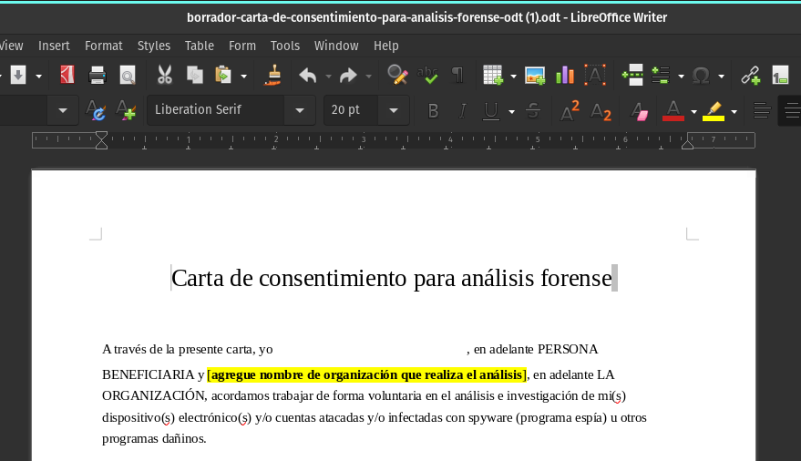

¿Cómo obtener un consentimiento informado para una investigación forense?
El presente documento se clasifica como una guía how-to. Describe qué es el consentimiento informado en el contexto de investigaciones forenses para la defensa de los derechos humanos, y presenta un borrador que puede ser utilizado por puntos de contacto, analistas y laboratorios forenses para obtener y registrar el consentimiento durante una investigación.
Consideración Legal
En esta guía no detalla el procedimiento de cadena de custodia. Este importante proceso se describirá en un material diferente.
Agradecemos las referencias y revisiones de la comunidad de práctica que permitieron la elaboración de este documento.
¿Qué es el consentimiento informado y por qué es importante?
El consentimiento es un principio que hace referencia a la exteriorización de la voluntad entre dos o más personas para aceptar derechos y obligaciones. En el contexto de análisis forense digital en beneficio de personas de la sociedad civil, el consentimiento informado se refiere al acuerdo y aprobación de acciones para facilitar la recolección, análisis, presentación y preservación de evidencia digital.
Un aspecto clave en cualquier acuerdo de consentimiento es la capacidad de quién acepta el acuerdo de tomar una decisión informada sobre el curso de la investigación, e incluso poder rechazar la asistencia. En la práctica forense, esto significa brindar toda la información necesaria para que quién solicita el análisis comprenda las acciones, riesgos, derechos y obligaciones que conlleva el proceso de investigación. Es importante que la persona analista se comunique de forma clara y transparente, y respete la voluntad de quién solicita el apoyo.
Durante una investigación forense, la persona analista deberá recolectar y analizar la evidencia, y también presentar los resultados de su análisis. Los artefactos forenses que se recolectan pueden contener información personal (contactos, archivos, fotografías, etc), que podría acarrear riesgos si se realiza un manejo inadecuado. Además, esta información podría estar sujeta a normas de protección de la información (GDPR, por ejemplo) y, más allá de la regulación existente, requieren de un tratamiento responsable, idealmente respaldado por políticas de manejo, protección y retención de la información.
Consideración Legal
Los datos que se recolecten estarán sujetos a legislación para la protección y manejo de la información de la jurisdicción local de residencia de la persona a quien se le hará el diagnostico forense.
Dependiendo del enfoque de la organización que brinda el apoyo y la naturaleza de la investigación, existen diferentes alternativas para la presentación de los resultados del análisis. En general, a través de la práctica forense, se pretende llegar a procesos de rendición de cuentas que implican acciones de incidencia como reportes, campañas, litigación, entre otros. Estas acciones pueden acarrear consecuencias y riesgos, tanto para la organización que realiza el análisis cómo para la persona afectada por el ataque. Algunos riesgos incluyen, por ejemplo, persecución legal, acoso y represalias adicionales por parte de gobiernos o de empresas desarrolladoras de tecnologías de vigilancia.
Incluso en situaciones donde no se pretenda publicar resultados o derivar en litigaciones, existe un riesgo y una responsabilidad al recolectar información para una investigación forense. Por lo tanto, es importante que ambas partes (quién analiza y quién solicita el análisis) identifiquen y establezcan acuerdos sobre la recolección y manejo de la información, de forma tal que se acepten y minimicen riesgos que puedan surgir a raíz de la investigación forense.
Si bien es la persona que solicita el análisis quién decide de forma informada qué información está dispuesta a compartir, así como el curso de la investigación, es importante que la organización que realiza el análisis también comparta expectativas, políticas y términos de uso de la asistencia que se brinda. Algunos ejemplos de términos de servicio incluyen los términos de uso de la Línea de Ayuda de Access Now y la política de privacidad de Amnesty Tech.
Origen y aplicación del consentimiento informado en investigaciones forenses consentidas
El consentimiento informado no es una práctica exclusiva de la forense digital. Se utiliza con frecuencia en ámbitos como la medicina, el periodismo o incluso actividades recreativas de alto riesgo, cuando por principios éticos o legales es necesario que una persona comprenda los riesgos a los que se expone antes de aceptar su participación en alguna actividad. Ejemplos incluyen iniciar un tratamiento médico, participar en un estudio farmacológico e incluso lanzarse en paracaídas.
Entender las posibles consecuencias de la acción es importante en todos los contextos. En la medicina, por ejemplo, obtener un consentimiento informado implica brindar al paciente información pertinente sobre riesgos y beneficios del tratamiento, alternativas, el rol tanto del paciente como del personal médico y el derecho a rechazar el tratamiento. Es responsabilidad ética y legal del profesional médico asegurarse que el consentimiento sea realmente informado.
Al realizar una investigación forense en beneficio de una persona de la sociedad civil, el proceso de consentimiento tiene el objetivo de brindar información clara sobre aspectos de la investigación como:
- ¿Qué información o dispositivos se estarán recolectando? ¿Qué información personal se incluye en la recolección?
- ¿Qué sucederá durante la investigación?
- ¿Con quién se va a compartir dicha información?
- ¿Qué posibles riesgos conlleva la investigación forense?
- ¿Qué resultados se pueden esperar?
- ¿Se autoriza a mencionar de forma pública el nombre de la persona en riesgo en acciones de incidencia o rendición de cuentas? ¿Se autoriza a mencionar de forma anónima?
- ¿Por cuánto tiempo se almacenará la información recolectada?
Idealmente, se debe solicitar el consentimiento antes de realizar la recolección de evidencia. Muchas de las preguntas se discuten de forma verbal durante las etapas iniciales de una investigación, pero es recomendable considerar un documento escrito que incluya algunos de los acuerdos clave. Si bien el consentimiento informado es parte de la responsabilidad ética y legal de quién realiza el análisis, es también una oportunidad para aclarar interrogantes y asegurar que quién solicita el análisis entienda el proceso y los riesgos, de forma tal que cuente con la agencia necesaria para decidir el curso de la investigación.
Se debe tomar en consideración que muchas de las personas que solicitan asistencia están inmersas en contextos de alto riesgo, por lo que establecer una relación de confianza basada en la transparencia y la escucha activa es fundamental. El manual de primeros auxilios psicológicos de la organización Vita Activa incluye una sección en realizar entrevistas empáticas que permitan atender las necesidades más inmediatas de quién solicita apoyo.
Tome en consideración que presentar un documento con lenguaje legal y una descripción de riesgos adicionales puede generar angustia y preocupación. La prioridad durante un análisis forense consentido debe ser el bienestar de la persona defensora. Asegúrese de aclarar dudas e intente generar confianza y claridad en el procedimiento a seguir.
En la siguiente sección presentamos un borrador de una carta de consentimiento informado que puede ser adaptada de acuerdo a las necesidades y particularidades de la investigación forense. Se incluyen un detalle paso a paso de cómo adaptar el documento y algunas consideraciones para su aplicación.
¿Cómo generar un documento de consentimiento informado?
Para generar una carta de consentimiento a partir del borrador propuesto, siga los siguientes pasos:
1- Descargue el borrador de carta de consentimiento informado. El formato utiliza campos de formulario, de forma tal que al convertir en PDF pueda ser completado de forma sencilla.

En los siguientes enlaces puedes descargar el borrador de carta de consentimiento en diferentes formatos:
- Carta de consentimiento en ODT
- Ejemplo del resultado al convertir el borrador .odt a PDF.
- Borrador de carta de consentimiento en Google docs.
2- Complete y verifique las secciones resaltadas en amarillo:
- Nombre de la organización: Incluya el nombre de la organización que realiza el análisis forense
- Objetivo de la investigación: Ajuste el objetivo, según sea necesario, indicando claramente qué acciones se realizarán durante la investigación forense, y con qué objetivo.
- Consentimiento para publicar: Si el objetivo es publicar los resultados de la investigación, mantenga y ajuste el texto correspondiente para obtener el consentimiento necesario. Si no tiene intención en publicar resultados, elimine esta sección.
- Detalle de la información a recolectar: Detalle la información que se recolectará para el análisis forense, dependiendo del tipo de dispositivo y proceso de adquisición.
- Enlace a la política de manejo de la información: En caso de existir, incluya el enlace a la política de manejo de la información. Aclare si la información será compartida con terceras personas.
- Confidencialidad de la investigación: Detalle si la participación en la investigación se debe manejar como información confidencial, de forma tal que quién solicita el análisis comprenda si se espera que no se compartan detalles sobre el análisis.
3- Convierta el documento en formato PDF y compártalo con la persona que solicita el análisis. Idealmente, el consentimiento se debe solicitar luego de una conversación de triaje inicial, donde se aclaran dudas y se determinan los alcances de la investigación.
4- Solicite a quién solicita el análisis revisar y completar el documento. Aclare cualquier duda que surja de la lectura del documento, y solicite la firma del mismo. De ser pertinente, puede también considerar servicios de firma de documentos en línea (como DocuSign, Dropbox Sign, SignNow). Sistemas de firma electrónica de llave pública (como PGP, OpenSSL o firmas digitales nacionales) también son útiles para garantizar la integridad de un documento firmado.
5- Una vez se reciba el documento de consentimiento, verifique que todos los campos estén completos y almacénelo en concordancia con políticas existentes de protección de la información. Tome en consideración cualquier acuerdo sobre la retención de la información para determinar por cuánto tiempo almacenar los artefactos forenses.
¿Qué información sensible se recolecta durante un análisis forense?
La información precisa a recolectar dependerá de las particularidades de cada caso, y será determinada por la persona analista forense.
A continuación se listan los artefactos forenses que típicamente se recolectan en diferentes tipos de análisis de dispositivos móviles, así como la información que usualmente incluyen para Android/Google y iOS/Apple
Android
-
Google Takeout: Google Takeout (disponible en takeout.google.com) permite seleccionar datos a exportar sobre diferentes productos de Google, incluyendo información de acceso a la cuenta de Google, información de descarga de aplicaciones de PlayStore, información sobre el registro y actividad de la cuenta, mensajes, entre otros. La lista es extensa, por lo que se recomienda solicitar puntualmente lo que sea necesario para el análisis, y evitar extraer información que contenga fotografías, u otros información personal no relevante. Al solicitar y documentar consentimiento, aclare lo que se solicitará del Google Takeout y el tipo de información que se incluye.
-
Android Bugreport: El ‘bugreport’ o informe de errores es un archivo generado por el sistema operativo Android para ayudar a encontrar y diagnosticar errores en las aplicaciones y el sistema operativo. En general, no incluyen información personal, pero sí incluye información sobre aplicaciones instaladas en el dispositivo, información sobre redes wi-fi y archivos de logs que podrían describir acciones realizadas por el usuario o el sistema.
-
Adquisición de AndroidQF: AndroidQF permite realizar una extracción de información de un dispositivo Android con el fin de realizar un análisis forense. La mayoría de los archivos recolectados no contienen información sensible, pero de forma opcional se puede generar una copia de los mensajes SMS y MMS. En concreto, recolecta configuraciones del sistema, lista de procesos, lista de servicios, copia de logs, lista de aplicaciones instaladas, lista de archivos del sistema y copia de los archivos temporales. De forma opcional se puede también exportar una copia de las aplicaciones instaladas.
iOS
-
Archivos de diagnóstico: Los archivos de diagnóstico de iOS incluyen información que puede ser de utilidad para identificar y resolver problemas en el dispositivo, como por ejemplo logs del sistema operativo, informes de errores, información sobre las aplicaciones instaladas, detalles sobre la versión de hardware y sistema operativo, entre otros. En general, no incluye información personal pero algunos archivos podrían contener detalles como correo electrónico, nombre de usuario, ubicación o detalles sobre uso de aplicaciones.
-
Respaldo: Los archivos de respaldo permiten realizar una copia de la información incluida en un dispositivo iOS. Por defecto, incluye información sensible como fotos, mensajes, datos de Apple mail, contactos, calendarios, notas, entre otros. Se recomienda utilizar o implementar soluciones que reduzcan información sensible luego de la extracción y antes de que se comparta.
Consideraciones importantes al obtener el consentimiento
Al solicitar y obtener consentimiento para llevar a cabo investigaciones forenses, tome en consideración lo siguiente:
-
Protección y manejo de datos personales: Durante una investigación forense, es posible que la persona analista adquiera, almacene y analice información sensible, que puede incluir mensajes, contactos, listas de aplicaciones, entre otros. Además de las responsabilidades legales sobre protección de la información, se deben implementar procesos y políticas que reduzcan y protejan esta información, y garanticen el cumplimiento de los acuerdos establecidos en el formulario de consentimiento. En caso de no existir, es recomendable que los laboratorios forenses desarrollen políticas sobre el manejo de la información (por ejemplo, la polìtica de manejo de la información de CiviCERT), que guíen el accionar durante la investigación forense, y brinden claridad a quién solicita el análisis.
-
Revisión legal: La información incluída en el presente documento, así como el borrador propuesto, pretenden servir de guía para que organizaciones de la sociedad civil puedan implementar procesos de consentimiento previo a completar el análisis forenses. Sin embargo, podría no ser adecuada o suficiente en contextos específicos. En caso de tener acceso a consejo legal, es recomendable que se discuta el proceso y el formulario con personas expertas, que puedan ajustar y extender los alcances según sea necesario. Algunas organizaciones que pueden apoyar con asesoría legal incluyen:
- Hiperderecho (Perú, Latinoamérica) - hola@hiperderecho.org
- Access Now Helpline (Global) - help@accessnow.org (Request to be connected with the Tech Legal Counsel or forensic lab)
- Artículo 19 (Latinoamérica) - info@article19.org
Conclusión
El objetivo del consentimiento informado es brindar transparencia y claridad, de forma tal que quién solicita el análisis pueda decidir el alcance y el curso de la investigación, en consideración de los posibles riesgos. Más allá de la documentación del consentimiento, es importante que la persona analista presente (de forma verbal o escrita) información clara sobre el proceso de análisis, incluyendo qué información se recolectará, qué datos sensibles se incluyen en dicha información, qué resultados se pueden esperar del proceso, con quién se compartirá la información adquirida, por cuánto tiempo se almacenará, entre otros.
Durante el proceso de consentimiento también se reconocen y aceptan los riesgos que conlleva una investigación forense. Además de estar acuerdo con estos riesgos, es importante que la organización que realiza la recolección y el análisis –y cualquier otra organización con quién se compartan los datos– manejen la información de forma responsable, en apego a políticas de protección y retención de la información.
Comentarios
¿Tienes comentarios o sugerencias sobre este recurso? Puedes utilizar la función de comentar que se muestra a continuación para dejarnos tus ideas o apreciaciones. Por favor asegúrate de seguir nuestro código de conducta. La función de comentarios enlaza directamente a la sección de Discussions de Github, donde también puedes participar en las discusiones de forma directa, si lo prefieres.